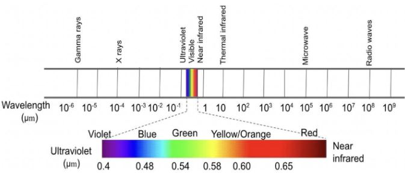
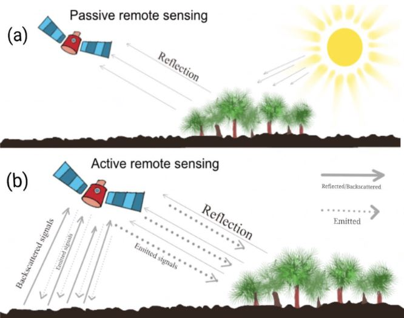

1 Week 1
Getting started with remote sensing
1.1 Summary
1.1.1 What is remote sensing?
Remote sensing can be concluded as acquiring information from a distance which can be obtained via sensors. Remote sensors are devices that make use of the electromagnetic spectrum (Figure 1) and atmospheric transmission windows in order to observe a chosen target. Most remote sensors measure either an intensity change or a phase change of EM radiation.

Sensors can be divided into active and passive. Passive sensors detect natural energy emitted or reflected by the Earth, for example, optical sensors which are able to capture sunlight reflection (Figure 2a), while active sensors emit energy and measure the reflected or backscattered signals (Figure 2b). This wide range of sensors enables remote sensing data to be acquired via satellites for global coverage, aircraft for higher spatial resolution, and even drones for small-scale data collection.

1.1.2 Scattering
Atmospheric scattering occurs when the particles or gaseous molecules present in the atmosphere cause the EM radiation to be redirected from its original path. The amount of scattering depends on several factors including the wavelength of the radiation, the amount of particles and gases, and the distance the radiant energy travels through the atmosphere. Three types of scattering:
-Rayleigh scattering – electromagnetic radiation interacts with particles that are smaller than the wavelengths of light -> it disturbs RS in the visible spectral range from high altitudes. Due to Rayleigh scattering the shorter wavelengths are overestimated. It diminishes the ‘crispness’ of photos -> has a negative effect on digital classification using data from multispectral sensors.
-Mie scattering – occurs when the wavelength of the EM radiation is similar in size to the atmospheric particles (e.g. aerosols, a mixture of gases, water vapour, dust). Influences the spectral range from near-UV up to mid-IR, and has a greater effect on radiation of longer wavelengths than Rayleigh scattering
-Non-selective scattering – occurs when the particle size is much larger than the radiation wavelength. For example, water droplets and larger dust particles. The most characteristic example is that we see clouds as white bodies. Important: clouds pose a great limitation – remote sensors cannot see through them, and they cast shadows.
Since electromagnetic energy is partly absorbed by various molecules in the atmosphere, such as ozone, water vapour, and carbon dioxide, it may be concluded that many of the wavelengths are not useful for remote sensing of Earth’s surface, due to the corresponding energy not being able to penetrate the atmosphere. According to (Tempfli et al. 2009) only the spectrum portions can be used for remote sensing, they are referred to as atmospheric transmission windows.
1.2 Applications
Due to solar energy being reflected differently based on surface characteristics, remote sensors are able to collect information which can reflect characteristics of vegetation since its properties can be detected dues to differences in energy reflection. The amount of energy reflected for a particular wavelength depends on leaf pigmentation, leaf thickness and composition (cell structure), and on the amount of water in the leaf tissue. Optical remote sensing can provide information about the type of plant and about its health condition. Or even forest biodervisity can be tracked with the use of remote sensors which are able to provide detailed information on key leaf traits such as leaf mass per area (wow!) (Gara, Rahimzadeh-Bajgiran, and Darvishzadeh 2021). Similarly, this can be applied for different types of soil too. For example, iron dominated soil has a significantly different reflectance curve, due to the iron absorption. This ‘feature’ of remote sensing can allow for detecion of soil contamination as Chen et al. (2024) did who in order to detect Chromium pollution used variability of soil spectra. Additionally, different forms of radiant energy allows to determine information regarding terrain surface (Poppiel et al. 2020) . Wójtowicz, Wójtowicz, and Piekarczyk (2016) presented how to optimize profitability of agricultural crop production with the use of remote sensors. This capability can be especially beneficial for farmers allowing them to make informed decisions optimizing agricultural practices. However, as it has been pointed by Jensen et al. (2009), remote sensing data analysis might be costly, and require some expert knowledge. For this reason, not all farmers, as in the outlined case, would be able to benefit from this opportunity. Perhaps, only the biggest farming corporations are able to benefit of such practices.
1.3 Reflection
The most interesting and life-changing part of this lecture was finally getting an answer to the biggest question of my life, why the sky is blue during a day, and orange/red during a sunset. Answer lies in scattering of sunlight. Due to difference in wave sizes, blue light is visible since it travels as shorter and smaller waves. This changes when the Sun gets lower in the sky, its light passes through more of the atmosphere, allowing the reds and yellows to pass straight through to our eyes.
Another interesting realization is the amount of objects located in the atmosphere. This raises questions whether there are sufficient policies in place that would regulate the amount of cluster, control its life cycle and ensuring suitable recycling or removal.